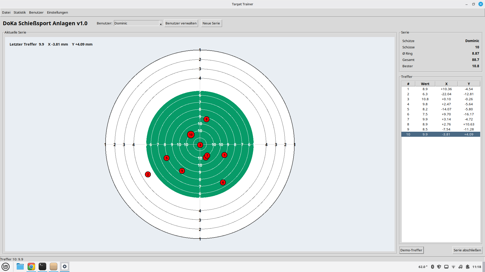

◎
Akustische Treffererfassung
Vier Mikrofone erfassen den Treffer in der Akustikkammer. Die Position wird später über die Laufzeitunterschiede bestimmt.
Eine modulare Trainingszielanlage mit akustischer Treffererfassung, digitaler Auswertung und übersichtlichem OSD – entwickelt für das private Training.
Funktionsumfang ansehenDer Aufbau wird von Anfang an modular geplant: Mechanik, Sensorik, Auswertungsbox und Anzeige können getrennt aufgebaut, gewartet und später erweitert werden.
Vier Mikrofone erfassen den Treffer in der Akustikkammer. Die Position wird später über die Laufzeitunterschiede bestimmt.
ESP32 und Mehrkanal-ADC übernehmen die Erfassung. Die eigentliche Auswertung und Darstellung kann in Python erfolgen.
Konfigurierbare Zielanzeige, Trefferpunkte, Farben und Hintergrund – passend zum eigenen Trainingsplatz.
Die Sensorik bleibt im Rahmen. Nach außen soll möglichst nur ein Cat7-Kabel geführt werden; die Anzeige kann per WLAN angebunden werden.
Schüsse, Serien, Durchschnittswerte und Benutzerstatistiken können gespeichert und später als Bericht ausgegeben werden.
Die spätere Software erhält eine Kalibrierung, damit die gemessene Trefferposition reproduzierbar auf das Ziel übertragen wird.
Der Zielrahmen basiert auf 25×25-mm-Nut-6-Aluminiumprofilen. Die empfindliche Akustik bleibt lokal am Ziel; die Daten werden digital zur Auswertungsbox übertragen.
Hier kommen später echte Screenshots der Software und Musterbilder des aufgebauten Systems hinein.

Platzhalter für spätere Produktfotos, technische Renderings und Detailaufnahmen des Rahmens.
Das Projekt wird zunächst als private Trainingsanlage entwickelt. Der Schwerpunkt liegt auf einer reproduzierbaren Messung, modularer Hardware und einer einfach bedienbaren Software.
Kontakt / Projekt